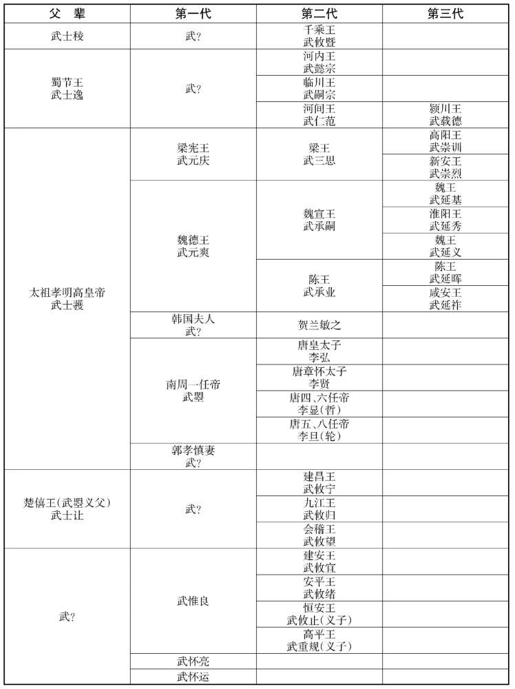
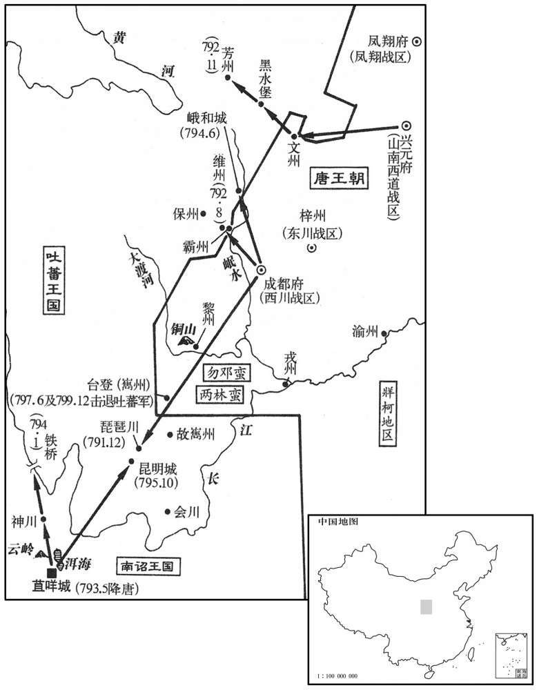

公元90年资治通鉴：本年记事、原文与白话对照
按原书编年位置阅读；追叙和史论不等于本年发生的事件。白话采用所据译本，缺译不以生成译文补齐。
卷47 · 本年记事
公元90年 · 汉孝和皇帝永二年
二年〔（庚寅、九○）〕
本年事件索引（现代整理）

本年形势与背景参考图

本年形势与背景参考图

本年形势与背景参考图

本年形势与背景参考图
春，正月，丁丑，赦天下。
春季，正月丁丑（二十六日），大赦天下。
二月，壬午，日有食之。
二月壬午（初二），出现日食。
夏，五月，丙辰，封皇弟寿为济北王，开为河间王，淑为城阳王；〔济北、河间、城阳，皆汉旧国也。光武省济北并泰山，省河间并信都，省城阳并琅邪。今复泰山为济北国，在雒阳东千一百五十里；分乐成、涿郡、勃海为河间国，在雒阳北二千五百里；分琅邪为城阳国。济，子礼翻。〕绝封故淮南顷王子侧为常山王。〔章和元年，淮阳顷王薨，未及立嗣，而国有大丧，今乃绝封。〕
夏季，五月丙辰（初七），将皇弟刘寿封为济北王，皇弟刘开封为河间王，皇弟刘淑封为城阳王。将前淮南顷王的儿子刘侧封为常山王，继承其父刘。
窦宪遣副校尉阎砻将二千余骑掩击北匈奴之守伊吾者，复取其地。〔砻，卢红翻。复，扶又翻。考异曰：西域传作「阎盘」，今从帝纪。余谓副校尉阎盘，即前战于稽落山，恐当作「盘」。章：乙十一行本正作「盘」。西域传：章帝建初元年，罢伊吾屯田，北屯奴遣兵守其地，今复击取之。〕车师震慑，前、后王各遣子入侍。〔慑，之涉翻。〕
窦宪派副校尉阎砻率领骑兵二千余人袭击北匈奴在伊吾的守军，重新占领该地。车师深感震恐，前后王国的国王都分别派遣王子到汉朝充当人质。
月氏求尚公主，班超拒还其使，〔氏，音支。使，疏吏翻。〕由是怨恨，遣其副王谢将兵七万攻超。超众少，皆大恐；超譬军士曰：〔譬，喻也。少，诗沼翻。〕「月氏兵虽多，然数千里踰葱岭来，非有运输，何足忧邪！〔言粮尽自当降也。〕但当收谷坚守，彼饥穷自降，不过数十日决矣！」〔谓胜负决也。降，户江翻。〕谢遂前攻超，不下，又钞掠无所得。超度其粮将尽，〔钞，楚交翻。度，大各翻。〕必从龟兹求食，乃遣兵数百于东界要之。〔要，一遥翻。〕谢果遣骑赍金银珠玉以赂龟兹，超伏兵遮击，尽杀之，持其使首以示谢。谢大惊，即遣使请罪，愿得生归，超纵遣之。月氏由是大震，岁奉贡献。
月氏王求娶汉朝的公主。班超拒绝，并遣回月氏派来的使者。月氏王因此心怀怨恨，派副王谢率领七万大军进攻班超。班超兵少，众人都大为恐慌。班超告诉士兵们说：“月氏兵虽然多，但他们远从数千里之外翻越葱岭而来，没有运输补给，有什么值得忧虑呢！我们只要将粮食收割干净，据城固守，而敌方饥饿困顿，自会降服，不过数十天，便可以见分晓了！”谢领兵到达后，便前来进攻班超，不能取胜。又在城外抢掠，也没有收获。班超估计敌方的军粮快要吃完，一定会向龟兹求援，便派出数百伏兵在东方路上拦截。谢果然让人骑马带着金银珠玉去龟兹换取粮秣。班超的伏兵发动突袭，将他们全部杀死，斩下使者的人头送给谢看。谢大吃一惊，立即派人向班超请罪，希望放他们活着回去。班超便把他们放走了。月氏因此受到巨大震动，每年都向汉朝进贡。
初，北海哀王无后，〔章帝元和三年，北海哀王基薨，无后。〕肃宗以齐武王首创大业而后嗣废绝，心常愍之，遗诏饮复齐、北海二国。丁卯，封芜湖侯无忌为齐王，〔无忌，齐王晃子；章和元年，晃贬。〕北海敬王庶子威为北海王。〔北海敬王睦也。〕
当初，北海哀王刘基死后没有继承人。章帝因齐武王刘首创王朝大业而后嗣断绝，心中常常哀怜。他留下遗诏，命令恢复齐国和北海国两个封国。本年五月丁卯（十八日），和帝将芜湖侯刘无忌封为齐王，将前北海敬王刘睦的庶子刘威封为北海王。
六月，辛卯，中山简王焉薨。〔谥法：一德不懈曰简。〕焉，东海恭王之母弟，而窦太后，恭王之甥也；〔窦太后母沘阳公主，东海恭王强女也。〕故加赙钱一亿，〔赙，音附。〕大为修耱茔，〔为，于伪翻。〕平夷吏民耱墓以千数，作者万余人，凡征发摇动六州十八郡。
六月辛卯（十二日），中山简王刘焉去世。因刘焉是东海恭王刘强的同母弟，而窦太后是刘强的外孙女，因此赏赐丰厚，增加助丧钱一亿，为刘焉大修陵墓。在这项工程中，铲平的官民坟墓数以千计，使用的役夫达一万余人。因征发受到扰动的地区，共计六州十八郡。
诏封窦宪为冠军侯，笃为郾侯，緕为夏阳侯；〔冠军县，属南阳郡。郾县，属颍川郡。夏阳县，属冯翊郡。冠，古玩翻。夏，户雅翻。〕宪独不受封。
诏书宣布将窦宪封为冠军侯，将窦笃封为郾侯，将窦封为夏阳侯。唯独窦宪不肯接受赐封。
秋七月，乙卯，窦宪出屯凉州，〔凉州部陇西、汉阳、武都、金城、安定、北地、武威、张掖、敦煌、酒泉等郡。〕以侍中邓迭行征西将军事为副。
秋季，七月乙卯（初七），窦宪出京屯驻凉州。命侍中邓叠代理征西将军职务，充当副统帅。
北单于以汉还其侍弟，九月，复遣使款塞称臣，欲入朝见。〔复，扶又翻；下同。朝，直遥翻。见，贤遍翻。〕冬十月，窦宪遣班固、梁讽迎之。会南单于复上书求灭北庭，于是遣左谷蠡王师子等将左右部八千骑出鸡鹿塞，〔谷，音鹿。蠡，卢奚翻。〕中郎将耿谭遣从事将护之，〔耿谭为使匈奴中郎将。将，领也；护，监也。〕袭击北单于。夜至，围之，北单于被创，〔被，皮义翻。创，初良翻。〕仅而得免，获阏氏及男女五人，〔氏，音支；下同。〕斩首八千级，生虏数千口。班固至私渠海而还。是时，南部党众益盛，领户三万四千，胜兵五万。〔胜，音升。〕
北匈奴单于因汉朝遣回他送去做人质的弟弟，本年九月，再次派遣使者到边塞表示服臣，并请求入京朝见。冬季，十月，窦宪派班固、梁讽前往迎接。适逢南匈奴单于再度上书请求消灭北匈奴王庭，听到这个消息，他便派左谷蠡王师子等人率领左右两部八千骑兵出鸡鹿塞，由中郎将耿谭派遣的从事充当监军，袭击北匈奴单于。大军夜间到达，向北匈奴单于发动围攻。北匈奴单于受伤，仅得活命。南匈奴俘虏了北匈奴王后及其子女五人，斩首八千人，生擒数千人。班固等抵达私渠海后返回。此时，南匈奴的势力日益强盛，拥有人口三万四千户，兵员达五万人。